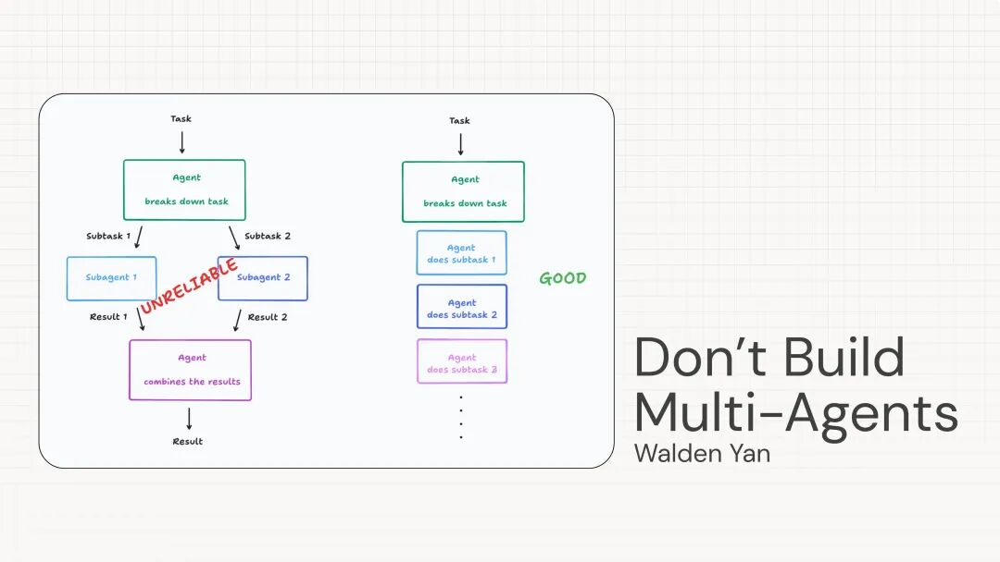
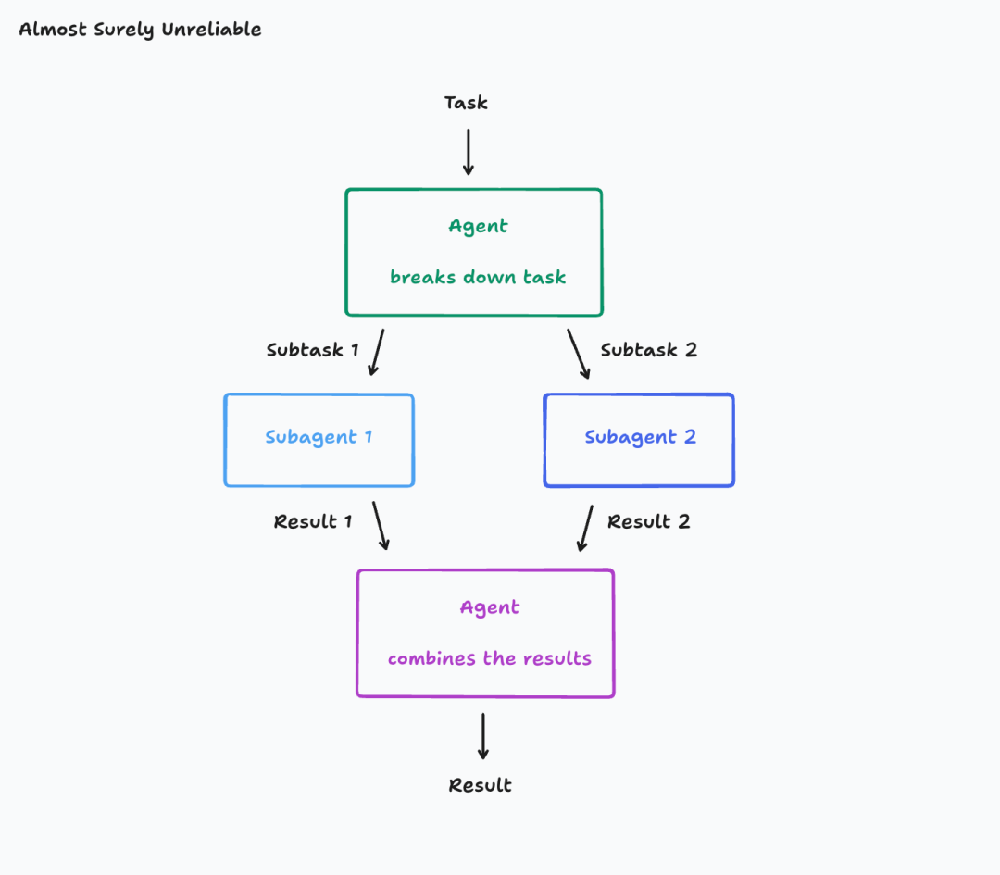
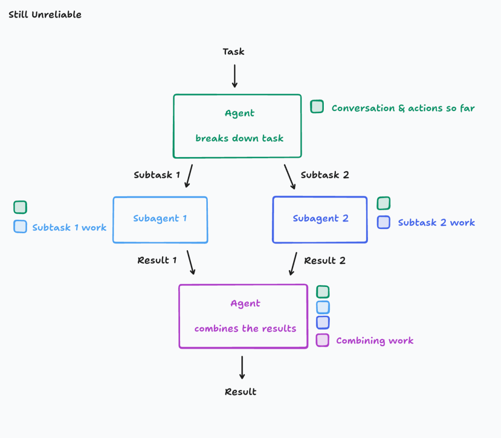
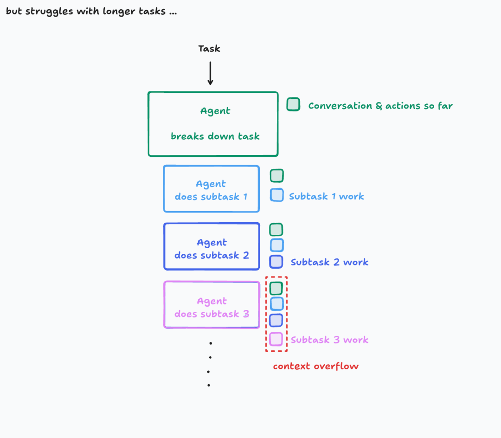
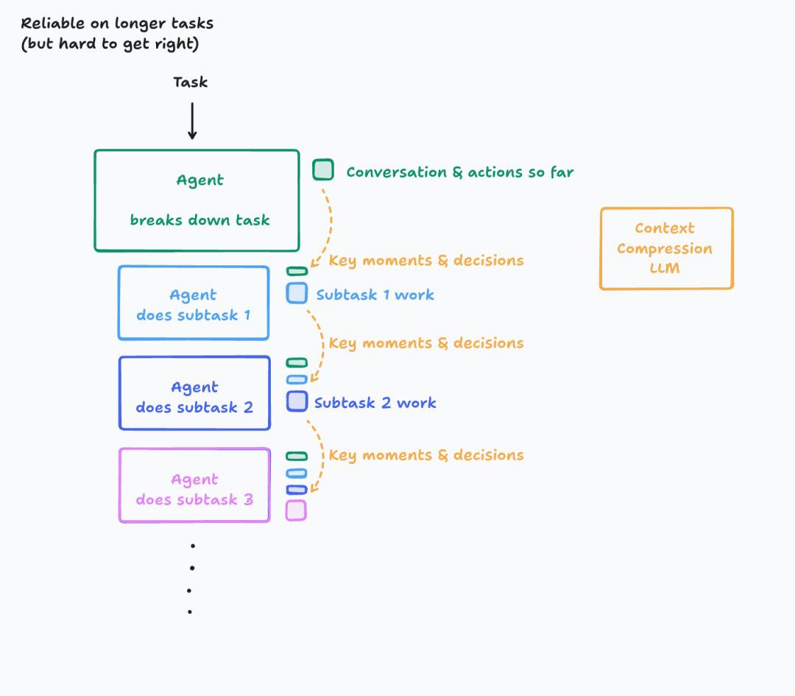

你可能会发现，现在互联网上充斥着各种关于如何构建 AI 智能体的教程，但在真正动手开发长期运行的智能体时，却很难找到靠谱的设计原则。很多人刚接触智能体时会被“多智能体架构”所吸引，以为更多的智能体意味着更高的效率，实际上却往往陷入了上下文缺失、决策冲突的泥潭，最终效果并不理想。
今天的文章，这是来自顶级 Agent 产品 Devin 的工程师 @walden_yan 写的他们构建 Agent 的心路历程，是他们在 Agent 开发路上无数次踩坑后总结出来的宝贵经验，也是目前最适合新手开发者掌握并理解的智能体设计核心思路。
希望它能帮你避开弯路，更高效地搭建出稳健、易用、真正能用到实际场景中的智能体系统。以下是全文：
不要构建多智能体（Multi-Agents）
目前的 LLM 智能体（Agents）框架在实践中表现并不理想。我想分享一些我们自己经过反复试验总结出的智能体设计原则，并解释为什么一些看起来很吸引人的想法实际上效果很差。
2025-06-12 Walden Yan
上下文工程原则（Principles of Context Engineering）
我们会逐步讲解以下两个核心原则：
1. 共享上下文 2. 行动隐含决策
为什么我们需要思考原则？
HTML 于 1993 年诞生。到了 2013 年，Facebook 推出了 React 框架。现在是 2025 年，React 及其衍生技术主导了人们开发网站和应用的方式。原因是什么？因为 React 不仅仅是一种代码编写的工具，它更是一种哲学。使用 React 意味着你要用响应式和模块化的方式构建应用。如今开发者已经普遍认可这种模式，但在早期的网页开发阶段，这种模式并不明显。
如今正处于大语言模型（LLM）和智能体开发的时代，我们仿佛还停留在仅用 HTML 和 CSS 拼凑页面的初级阶段，尚未形成成熟的最佳实践。除了基础的搭建方法，目前还没有一种普遍认可的智能体构建标准方法。
比如，OpenAI 推出的 swarm(https://github.com/openai/swarm) 和微软推出的 AutoGen(https://github.com/microsoft/autogen) 等库，都在推广一种我认为错误的智能体架构，即多智能体（multi-agent）架构。我稍后会详细解释原因。
不过，如果你是刚接触智能体构建，还是有很多资源可帮助你搭建基本框架，
如Anthropic 的智能体构建指南(https://www.anthropic.com/engineering/building-effective-agents)、OpenAI 的智能体白皮书(https://cdn.openai.com/business-guides-and-resources/a-practical-guide-to-building-agents.pdf)。
但当你需要构建真正严肃的生产应用时，情况则完全不同。
长时间运行智能体的理论
我们先从“可靠性”说起。当智能体需要长时间稳定运行并保持连贯的对话时，你必须控制潜在错误的累积，否则一旦出错，将很快失控。这种可靠性的核心，就是“上下文工程”（Context Engineering）。
什么是上下文工程？
2025 年的模型已经非常聪明，但即使最聪明的人类，没有上下文也无法有效完成任务。早期我们提出了“提示工程”（Prompt Engineering），强调的是如何编写提示词以便模型理解。而“上下文工程”则更进了一步，强调的是在动态系统中自动提供合适的上下文信息。这需要更高的技巧，是构建智能体最重要的工程任务。
举一个常见智能体的例子。这个智能体会：
1. 将任务分解成多个部分； 2. 启动多个子智能体分别处理这些子任务； 3. 最后将结果组合起来。

这种架构看起来很有吸引力，特别是在处理多个并行任务的领域。但是，它极其脆弱，容易出问题。
关键的失败点在于：
假设你的主任务是“开发一个类似 Flappy Bird 的游戏”。这个任务被分成了两个子任务：
• 子任务1：开发带有绿色管道和碰撞框的背景； • 子任务2：开发可以上下移动的小鸟。 实际上，子智能体1 错误理解了任务，做出了一个类似超级马里奥的背景；子智能体2 开发出的小鸟也不像游戏里的，动作也完全不同。最终主智能体只能无奈地将这两个错误拼凑在一起。
这看起来是个特殊的例子，但实际任务中充满了类似细节，很容易被错误理解。你可能认为把主任务直接复制到子智能体就能避免误解，但在真实系统中，对话通常是多轮的，智能体可能调用了多个工具，每个细节都有可能影响任务理解。
因此，提出第一个原则：
原则一：共享完整上下文，包括完整的智能体历史记录，而不仅仅是单个消息。
现在让我们再改进一下，确保每个智能体都有之前智能体的上下文。

然而，我们的问题还没解决。即使给子智能体完整上下文，它们依旧可能做出风格完全不同的作品，因为子智能体无法看到彼此的具体行动，从而导致结果互不一致。
子智能体各自的行动背后隐含了不同的假设，互相冲突。
因此，提出第二个原则：
原则二：行动隐含决策，冲突的决策会带来糟糕的结果。
我认为原则一和原则二非常重要，很少有违背它们而取得成功的情况。因此，在默认情况下，应该排除掉任何不遵循这些原则的智能体架构。这听起来可能过于限制，但实际上可探索的架构空间依然广泛。
最简单的遵守原则的方式就是使用单线程线性智能体：

说实话，简单架构已经足以应对大部分情况。但对于真正长时运行任务，并愿意投入大量精力的人，可以探索更高级的方案：

• 引入一个新模型专门负责压缩行动历史和对话中的关键细节、事件和决策； • 这很难，需要投入精力识别关键信息； • 在某些领域甚至可以考虑微调较小的专用模型（Cognition 公司就这么做了）； • 这样做的好处是能够支持更长的上下文，但最终仍然会碰到极限； • 鼓励深入思考如何处理无限长的上下文，这是个深奥的问题。
应用这些原则
作为智能体构建者，确保每个智能体行动都能了解系统其他部分相关决策的上下文信息。理想情况下，每个行动都能看到其他所有行动的完整上下文。然而由于上下文窗口有限，可能不得不做一些实际的折衷。你需要明确自己能接受的复杂度，以及对可靠性的期望。
下面是一些现实世界的案例供参考：
Claude Code 子智能体示例
截至 2025 年 6 月，Claude Code 是一个启动子任务的智能体示例。但它不会与子任务智能体并行运行。子任务智能体通常只回答具体问题，而不直接编写代码。因为子任务智能体缺乏主智能体完整的上下文信息。如果并行运行多个子智能体，会导致结果冲突，降低可靠性。Claude Code 团队故意采用了简单的方法。
代码编辑应用模型
2024 年，很多模型在编辑代码方面表现差劲。当时普遍采用一种名为“编辑应用模型”的做法：大模型生成 markdown 格式的编辑说明，小模型根据说明重写整个文件。但这种方式经常出错，因小模型经常误解大模型给出的指令。如今编辑和应用操作更多由单个模型一步完成。
关于多智能体（Multi-Agents）
如果我们想要更好地并行执行任务，你可能会想让智能体之间互相“交流”和协作，就像人类程序员一样。当工程师A的代码和工程师B产生冲突时，理想的解决方案是彼此沟通。然而，今天的智能体尚不具备人类那样高效沟通的能力。
自 ChatGPT 推出以来，人们不断尝试多个智能体之间的协作（参考3、参考4）。虽然长期来看我很乐观，但到2025年，协作式多智能体架构的系统仍非常脆弱。决策过于分散，上下文信息无法有效传递。目前，我尚未看到针对多智能体上下文传递问题的专门深入探索。我相信，当单线程智能体与人类沟通能力提升后，智能体间的交流能力将自然而然地得到提升，从而真正实现并行和效率的飞跃。
更广义理论的探索
以上对上下文工程的探讨只是智能体设计原则的初步探索，还有很多挑战和技术未涉及。我们在 Cognition 公司内部正不断思考这些问题，并围绕上述原则设计内部工具。但我们的理论也并非完美，未来领域发展可能会发生变化，因此保持一定的灵活性和谦虚态度也是必要的。
原文地址：https://cognition.ai/blog/dont-build-multi-agents
当 99% 的内容沦为AI制造的噪音时，唯有持续的深度阅读和独立的批判性思考，才能穿透喧嚣、洞见真相；而与AI深度共生、解决真实问题的人，终将超越时代的局限，刷新人生的上限！